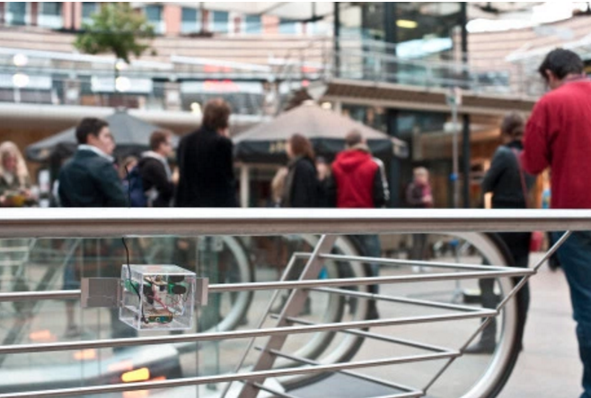
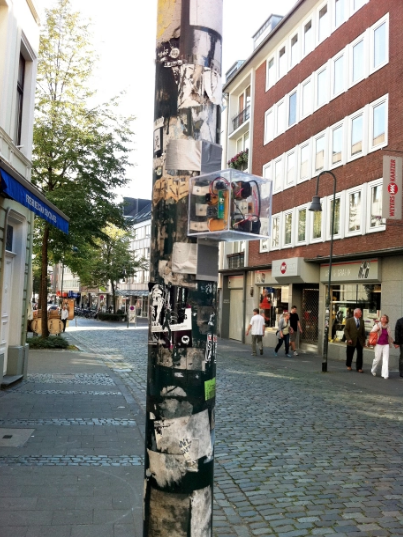
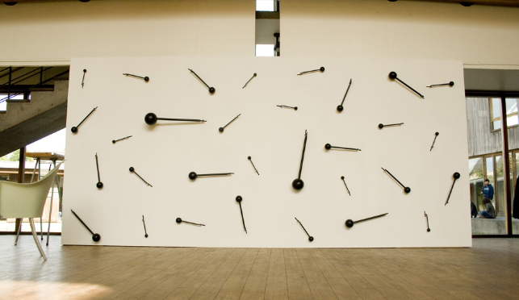

OpenBaar Kabaal & The Beaters
Son dos proyectos de sonido realizados por el diseñador Jitske Blom nacido en Rotterdam (1983) graduado de la academia de diseño Eindhoven en 2008 en el departamento de espacio público, y el compositor y artista de sonido Thomas Rutgers. Estas intervenciones son dos proyectos de sonido que comparten el mismo principio pero son aplicadas de diferente forma, una se realiza como una intervención urbana y la otra se crea en un espacio cerrado como una galería de arte.

Openbaar Kabaal es una intervención se apropia del espacio público usando un grupo de pequeños artefactos que producen sonido usando el mismo entorno urbano y transformándolo en un entorno musical. Estos artefactos se asemejan a una pequeña caja transparente hecha especialmente para pasar lo más desapercibida posible en el entorno urbano visualmente, ya que lo que se busca resaltar es el sonido de los artefactos, estos aparatos interiormente están compuestos por una serie de circuitos que hacen que una palanca interna golpee la materialidad del mobiliario urbano en la cual se posiciono una determinada caja, creando una melodía a partir de los distintos sonidos que se forman por los diferentes “sustratos” que se encuentran en el espacio público, finalmente estas cajas son controladas remotamente para crear una melodía usando en conjunto todos los sonidos que se van logrando con los diferentes superficies del mobiliario urbano.

Estas cajas son instaladas en lámparas, basureros, señales de transito, puertas, bancas, ventanas de tiendas y cualquier elemento que parezca interesante de ocupar para generar un sonido nuevo por los artefactos. Todo esto realizado en la vía pública llamando la atención de los transeúntes que se encontraban en el lugar de la intervención invitándolos a parar y escuchar la intervención que se está realizando mediante la utilización de los sonidos.
Jitske Blom describe su proyecto y como se enmarca dentro de este espacio público: “The pretty unobtrusive small ticking boxes (they’re almost invisible) incite us to have a new, fresh look at the space that they – and we – are in,” Se resalta la característica de los aparatos que son casi invisibles instalados en el mobiliario, y como su intervención puede darle una nueva “mirada” al espacio público en el que nos movemos diariamente y estamos sumergidos. Thomas también lo describe : “because through their ticking, they all of a sudden make us hear that space. This public hubbub work actually started out as a fixed composition, for eight of such tickers, that was performed at each of the different locations that we installed the piece. Later on it became more of a live improvisation, in which I manipulated the ticking via a Pure Data interface.”
Se proponen mediante esta intervención escuchar este espacio en el que nos movemos, el escuchar los sonidos de los mismos elementos que componen el espacio público más que escuchar el entorno de estos espacios como sería el escuchar la gente camina o hablar, el ruido de los autos, alarmas, música de las tiendas etc. La materialidad de los espacios públicos son usados para crear sinfonías urbanas, elementos que siempre estuvieron presentes pero que aún no se descubrían como un enorme conjunto de instrumentos musicales urbanos capaz de generar melodías y darle un giro al propósito principal por el que fueron puestos en un determinado espacio y lugar de la vía pública. Aunque la primera intención del proyecto al principio fue instalar los artefactos con una melodía ya establecida luego se cambió al transcurrir el tiempo que era mejor crear una improvisación en vivo.
Openbaar Kabaal fue el comienzo de lo que sería un segundo proyecto de Jitske Blom junto a Thomas Rutgers el cual se llamaría The Beaters, el cual consiste básicamente en el mismo principio pero llevado a cabo de una manera más formal y trasladado a una instalación estática. Jitske Blom describe la diferencia entre los dos proyectos “It actually involves quite a major shift of attention,”, Thomas lo explica “In our work with the little boxes the goal was, so to say, the creation of a little ‘symphony’ made up from existing objects; the objects that we glued the boxes to. In The Beaters our attention has shifted from these objects to the subject: from the thing that is being ticked against, to the thing that is ticking. The focal point now is the ticker itself.”
En la segunda versión del proyecto se cambia la materialidad de los “tickers” y toman un rol principal alejándose de la materialidad del objeto que los sostenía, resaltando la materialidad de los mismos aparatos. “It is still all about materiality, But now it is about the material of the ticker itself.”
Esta materialidad de lo urbano se cambia por la de la madera, generando 4 módulos de madera de 2 metros y 20 centímetros por 1 metro y 20 centímetros que hacen una gran pared, estos se pueden ir rotando y acomodando en diferentes posiciones dependiendo del espacio disponible en las galerías a los cuales serían llevados. En estos módulos se encuentran instalados los “tickers” que se asemejan a palancas, de diferentes tamaños y formas y de diferentes materialidades como madera, metal, plástico, sólidas y huecas que están pintadas de negro y que van golpeando y creando una sinfonía con el sonido de la materialidad de su mismo sustrato. Lo que buscan mediante estos materiales diferentes es crear una “orquesta” como lo sería un violín, viola, cello, etc.
“We wanted to use as many different ones as possible,” dice Jitske. “But with the condition that they’d all have a similar visual appearance. As you can see, the beaters all look the same. Their materiality is being disguised. We don’t want the audience to be able to see what kind of material a particular beater has been made of. So that has driven our selection: use as many different materials as possible, but sticking to the condition that they all should look the same. That has been an important part of my research, experimenting with all sorts of different kinds of plastic, et cetera.”
Estos tickers son movidos por pequeños motores eléctricos, y parte esencial de escuchar también es ver el movimiento que realizan estas palancas, las cajas transparentes de openbaar kabaal todas contenían el mismo ticker pero no había mucho que mirar ahí, pero en este segundo proyecto the beaters, la información visual es concebida por los movimientos de los beaters y es una parte esencial de la composición realizada, ya que al esconder la materialidad de los beaters el espectador solo puede saber cual es cual al mirar por un tiempo y reconocer los sonidos y de donde provienen. “Our starting point indeed was closer to that of the public hubbub, but while thinking and working on the project it occurred to us that for practical reasons it would be much better and far more convenient to build, say, our own wall, and bring that to the different locations”. Es así como el proyecto evoluciona utilizando la misma base de los tickers y cambia desde tener que ir a un espacio urbano para obtener el sonido de una determinada materialidad, a construir su propio “lugar” y utilizar las materialidades que desean para generar los sonidos además de poder trasladar este espacio generado a donde quisiesen